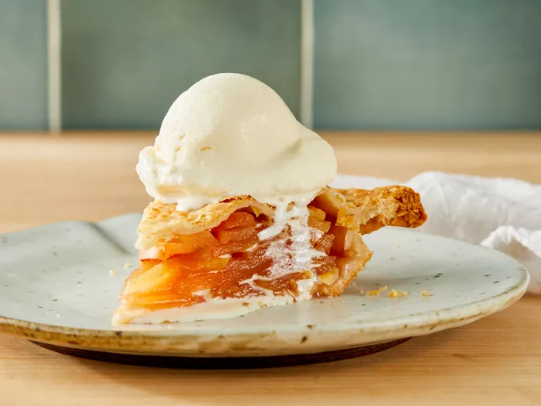

Easy Apple Pie Recipe

This easy apple pie recipe belongs to my mother.
I make it all the time when I want a simple homemade pie. I love it!
I often add a dash of nutmeg to the apple filling.
An apple pie is a pie in which the principal filling is apples.
Apple pie is often served with whipped cream, ice cream ("apple pie à la mode"), custard or cheddar cheese.
It is generally double-crusted, with pastry both above and below the filling; the upper crust may be solid or latticed
(woven of crosswise strips). The bottom crust may be baked separately ("blind") to prevent it from getting soggy.
Deep-dish apple pie often has a top crust only. Tarte Tatin is baked with the crust on top, but served with it on the
bottom.
Ingredients List
- 1 (14.1 ounce) package pastry for a 9-inch double-crust pie
- ¾ cup white sugar, or more to taste
- 1 teaspoon ground cinnamon
- 6 cups thinly sliced apples
- 1 tablespoon butter
Cooking Steps
- Gather the ingredients. Preheat the oven to 450 degrees F (230 degrees C).
- Line a 9-inch pie dish with one pastry crust; set second one aside.
- Combine 3/4 cup sugar and cinnamon in a small bowl. Add more sugar if your apples are tart.
- Layer apple slices in the prepared pie dish, sprinkling each layer with cinnamon-sugar mixture.
- Dot top layer with small pieces of butter. Cover with top crust.
- Bake pie on the lowest rack of the preheated oven for 10 minutes. Reduce oven temperature to 350 degrees F (175 degrees C) and continue baking until golden brown and filling bubbles, 30 to 35 minutes more.
- Serve warm or cold.